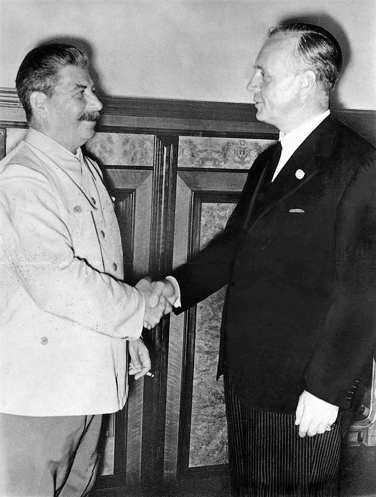

|
Main Events in 1941
The Holocaust (1941 - 8/5/1945)
 |
A group of Jewish girls wearing the yellow star.
(United States Holocaust Memorial Museum, courtesy of Oesterreichische Nationalbibliothek) |
 |
Gate to Auschwitz I with its Arbeit macht frei sign. |
 |
Auschwitz II-Birkenau gatehouse; the train track, in operation May–October 1944, led directly to the gas chambers. |
- 6 million Jews died, including 1.5 million children
- Based from the Final Solution to the Jewish Question
- The International Holocaust Remembrance Day is 27th of January
- The phrase “Arbeit macht frei” at the gate of concentration camps translates to “Work sets you free”
- Auschwitz has become a symbol of fear, genocide, and the Holocaust across the world. It was founded in 1940 by Germans in the outskirts of Oswiecim, a Polish city taken to the Third Reich by the Nazis.
- Auschwitz was intended to be another concentration camp of the type that the Nazis had been establishing from the early 1930s. It also became the largest extermination camp in the beginning of 1942 where the Final Solution to the Jewish Question was carried out.
- Why the Jews?
- Since the Middle Ages, Jews in Europe have faced discrimination and persecution for religious reasons. For centuries, Christians considered the Jewish faith an outlier that needed to be removed. Jews were often compelled to convert or were forbidden from practising certain professions. Religion was less significant in the nineteenth century. It was supplanted by beliefs about racial and ethnic differences. The concept that Jews belonged to a distinct people from Germans, for example, spread. Even Jews who converted to Christianity were "different" because of their ancestors.
- Final Solution to the Jewish Question (Endlösung der Judenfrage) was the intentional and systematic extermination of European Jews. It was the last chapter of the Holocaust lasting from 1941 until 1945, great majority of Jewish victims were slaughtered during this time period.
Operation Barbarossa (22/6/1941 - 5/12/1941)
|  |
Stalin and Ribbentrop after signing the non-aggression pact. |
- An opening of the Eastern Front.
- Axis failure to reach the A-A line.
- Beginning of Soviet Winter counter-offensive.
- Over 3 million men assaulted a 2,900-kilometre front, making it the largest military invasion in history. There were also 600,000 autos and 750,000 horses.
- In the Molotov-Ribbentrop Pact of 1939, Germany and the Soviet Union agreed not to fight each other. Beginning in December 1940, the German surprise attack was planned. The invasion was set to start on May 15, with the primary purpose of eliminating the Soviet military. Some Nazi ideological goals were stated, as were Soviet natural resource assets that might be used to continue fighting the Allies.
- Despite the Soviets' dire situation, the Axis failed to fulfil its goals. Tactically, the Germans controlled some of the most significant economic sectors in the Soviet Union, most notably in Ukraine. The Germans, however, were forced back from Moscow and were unable to launch another huge and long-lasting onslaught on the Eastern Front like Operation Barbarossa.
|